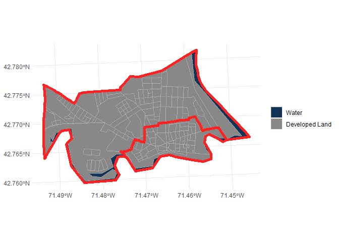

The goal of hercgeos is to make it a little easier and more efficient to work with spatial data from the US Census and related sources.
Installation
You can install the development version of hercgeos from GitHub with:
# install.packages("devtools")
devtools::install_github("higherX4Racine/hercgeos")Example
The fresh-from-the-servers TIGER/Line® shapefiles have EXECRABLE column names. hercgeos helps with this.
library(hercgeos)
NASHVILLE_NH |>
purrr::discard_at("historic_district") |>
purrr::map(names) |>
tibble::enframe(name = "Layer", value = "Names") |>
knitr::kable(caption = "Original column names")| Layer | Names |
|---|---|
| blocks | STATEFP20 , COUNTYFP20, TRACTCE20 , BLOCKCE20 , GEOID20 , NAME20 , MTFCC20 , UR20 , UACE20 , UATYPE20 , FUNCSTAT20, ALAND20 , AWATER20 , INTPTLAT20, INTPTLON20, HOUSING20 , POP20 , geometry |
| tracts | STATEFP , COUNTYFP, TRACTCE , GEOID , NAME , NAMELSAD, MTFCC , FUNCSTAT, ALAND , AWATER , INTPTLAT, INTPTLON, geometry |
Original column names
NASHVILLE_NH |>
purrr::discard_at("historic_district") |>
purrr::map(fix_old_year_suffixes) |>
purrr::map(names) |>
tibble::enframe(name = "Layer", value = "Names") |>
knitr::kable(caption = "Repaired column names")| Layer | Names |
|---|---|
| blocks | STATEFP , COUNTYFP, TRACTCE , BLOCKCE , GEOID , NAME , MTFCC , UR , UACE , UATYPE , FUNCSTAT, ALAND , AWATER , INTPTLAT, INTPTLON, HOUSING , POP , geometry |
| tracts | STATEFP , COUNTYFP, TRACTCE , GEOID , NAME , NAMELSAD, MTFCC , FUNCSTAT, ALAND , AWATER , INTPTLAT, INTPTLON, geometry |
Repaired column names
There are also some nice presets for mapping
ggplot2::ggplot() +
geom_terrain(
NASHVILLE_NH$blocks |>
fix_old_year_suffixes() |>
fix_latlong_to_numeric() |>
transform_tiger_to_utm() |>
dplyr::mutate(
Terrain = terrain_factor(.data$UR,
.data$AWATER,
.data$ALAND)
)
) +
ggplot2::geom_sf(
data = NASHVILLE_NH$tracts |>
fix_latlong_to_numeric() |>
transform_tiger_to_utm(),
fill = NA,
color = "#ff2222",
linewidth = ggplot2::rel(2)
) +
ggplot2::theme_minimal()